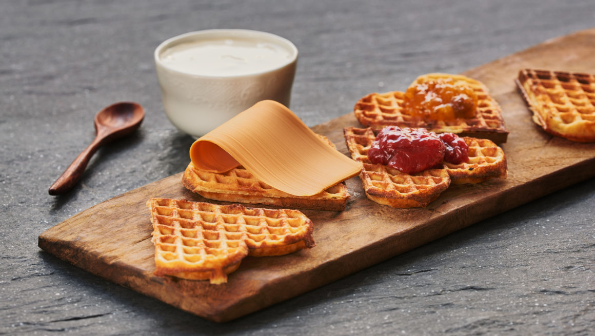

Waffles
- Egg
- Milk
- Flour
- Sugar
- Baking soda
- Vanilla sugar
- Butter
- pcs
- litre
- grams
- grams
- ts
- ts
- grams
- Mix eggs and sugar until white.
- Add milk and mix.
- Add flour, baking soda and vanilla sugar and mix until even.
- Add melted butter
- Let the waffle batter rest for 30 minutes.
